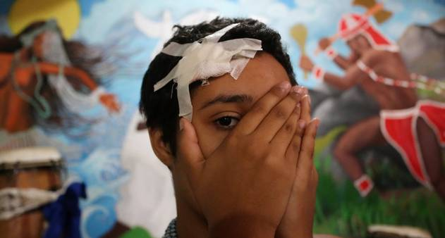
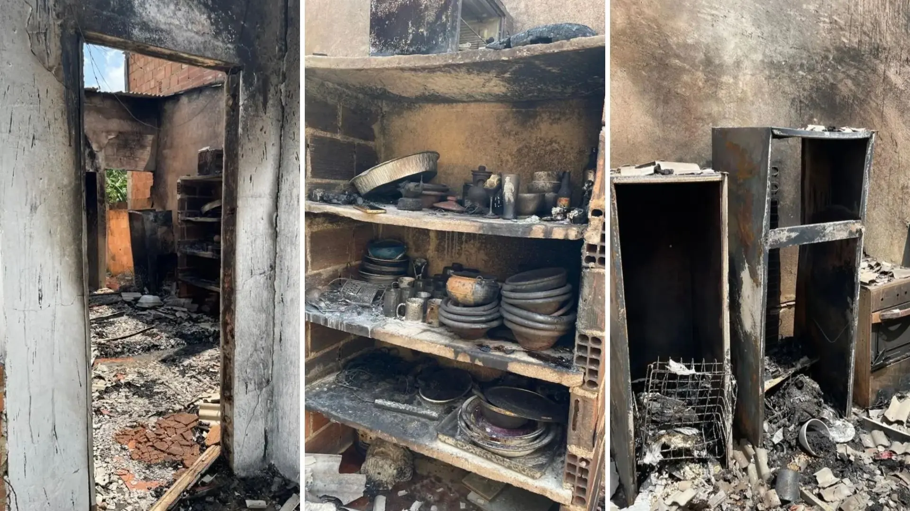
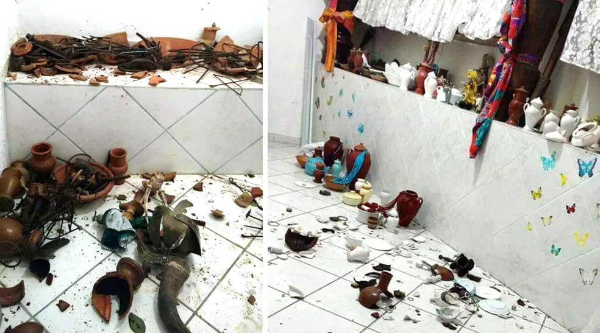

O que é Intolerância Religiosa?
O conceito de Intolerância Religiosa abrange diferentes adversidades, como o ódio direcionado por crenças, simbolos religiosos
e sua identidade cultural, sendo assim, um problema visivelmente ambíguo no cenário atual brasileiro. A intolerância Religiosa é um
desafio existente no território brasileiro desde o periodo colonial onde, a situação do Brasil era algo evidentemente problemática,
onde crenças e territórios culturais indigenas foram destruidos e moldados à seguir uma outra crença coercitivamente, adentrando no
conceito de "o que seria Intolerância Religiosa".
Em muitas situações, a intolerância religiosa não se manifesta apenas com agressões verbais ou físicas, também se revela de maneiras mais ocultas, presentes em ensinamentos e a propagação do ódio desde o berço em crianças que, consequentemente, seguirão a linha de raciocinio de seus genitores. Algo assim, também pode ser entitulado como ser "intolerante religioso", visto que a difamação de religiões fora de seu total conhecimento possam receber comentários ofensivos e odiosos pela falta de conhecimento de muitas famílias.
Principais Causas
Entre as principais causas da Intolerância Religiosa, está a irrevêrencia de simbolos religiosos realizadas com o intuito de ridicularizar e imputar um certo "castigo" em tais devotos pelo simples fato de não seguirem com o padrão atual da sociedade brasileira, lamentavelmente, sendo algo que se contradiz referente a "liberdade de expressão" e "livre arbitrio" à população negra que se identifica e segue tais crenças.
Frase dita por um filósofo frânces denominado Voltaire.
O pensamento rígido e fechado, consequência da falta de conhecimento e informações lúcidas sobre crenças que não são bem vistas pela sociedade, também entra nas raízes dos problemas que ocasiona essa difamação e agressão à cultos e pessoas.
Impactos na Sociedade
Os principais impactos na atualidade abrange diversas complicações, dando enfâse a falta de seguimento ao conceito de Estado Laico, o que na prática deveria fazer com que o Brasil se tornasse um ambiente harmônico, que assente crenças e culturas diversas. Acrescenta-se o fato de que o Brasil ser denominado como um Estado Laico não impede a população de se prevalecer diante a força de uma crença vista como "poderosa" dentro da modernidade.
O Brasil é um símbolo de resistência, e pode-se inserir dentro desta pauta significativa denonimada como impacto social, a sua história, que foi totalmente moldada a seguir padrões brancos e europeus, que consequentemente, acarretou uma enorme perda de cultura, crenças, e idiomas (Tupi, Aruak, Macro-jê e Karib), tais perdas ocasionaram o nosso primeiro contato brasileiro com o que significaria "intolerância religiosa" e "racismo estrutural".
Como Combater a Intolerância Religiosa?
O combate à intolerância religiosa funciona na prática através de três pilares: educação, diálogo aberto e leis firmes que garantam a liberdade de crença. Escolas, universidades e a mídia têm o papel principal de liderar esse movimento.
Conhecer a religião do outro é o caminho mais rápido para desarmar o preconceito. A diversidade de fés não é um problema; é uma riqueza que amplia nossa visão de mundo e torna a convivência social muito mais pacífica
No fundo, construir uma sociedade tolerante é uma questão de empatia e respeito aos direitos humanos no dia a dia. Garantir que cada um possa exercer sua fé em paz é uma obrigação de todos nós.
Denúncias de Intolerância Religiosa no Brasil
Fonte: Ministério dos Direitos Humanos e da Cidadania (Disque 100), 2026.
Estados com mais denúncias em 2025
Fonte: Ministério dos Direitos Humanos e da Cidadania (Disque 100), 2026.
Casos que Marcaram a Luta Contra a Intolerância Religiosa no Brasil
Por trás dos números existem histórias.
A intolerância religiosa não se manifesta apenas em estatísticas e denúncias. Em todo o Brasil, pessoas já sofreram agressões físicas, ameaças, discriminação e ataques a seus locais de culto por causa de sua fé. Os casos apresentados a seguir representam alguns episódios que marcaram a luta pela liberdade religiosa e mostram a importância do respeito à diversidade de crenças em uma sociedade democrática.

Menina de 11 anos apedrejada no Rio de Janeiro
Em 2015, uma menina que saía de um culto de Candomblé foi atingida por uma pedra e sofreu ferimentos. O caso ganhou repercussão nacional e se tornou um símbolo da luta contra a intolerância religiosa.
Fonte: Reportagens da época publicadas por veículos nacionais.

Ataques a terreiros na Baixada Fluminense
Investigações policiais apontaram a atuação de criminosos envolvidos na destruição de terreiros e perseguição a praticantes de religiões de matriz africana em comunidades do Rio de Janeiro.
Fonte: Polícia Civil do RJ e reportagens nacionais

Terreiros depredados e incendiados
Diversos terreiros pelo país relataram ameaças, depredações e destruições de espaços sagrados. Pesquisas recentes mostram que esse tipo de violência continua ocorrendo em diferentes estados brasileiros.
Fonte: Pesquisa "Respeite o Meu Terreiro" (2025)